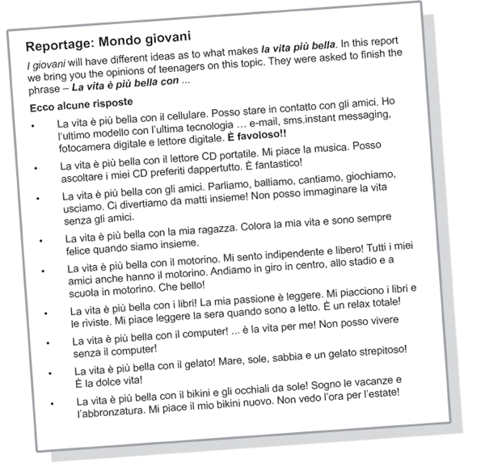

Attività 6 La vita è più bella con ...Here’s an article from a teenage magazine about what makes teenage life more beautiful. Teenagers were asked to finish the phase La vita è più bella con ... . Read their opinions then answer the questions which follow. Tocca a te! Complete the sentence for yourself.
Leggi di nuovo le risposte in the reportage. Can you identify all the items mentioned in the responses? Tick the items you come across.
La vita è più bella con ...If you were going to be away from home for an extended period of time, for example two months, on the Italian exchange, what would you absolutely have to take with you to make la vita più bella while you are away from home? Cosa porti con te? Quali sono le cose più importanti per te? Finally, see if you can complete the sentences using the words provided. Hope La vita è più bella con … ! |